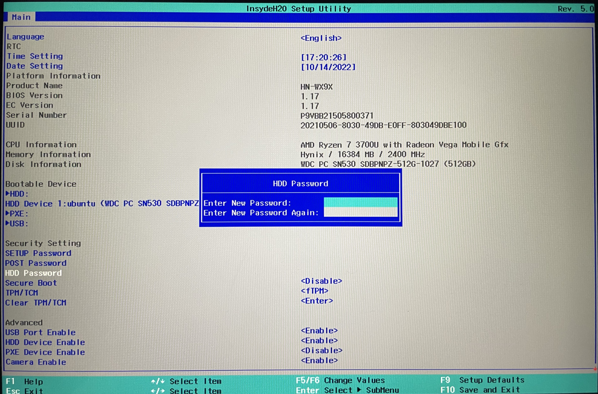
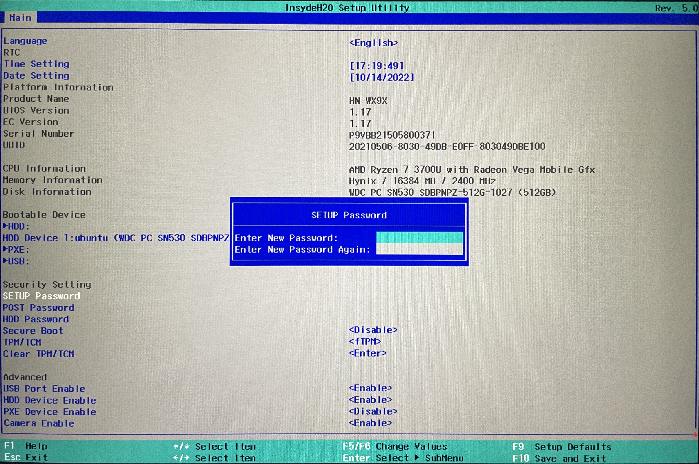
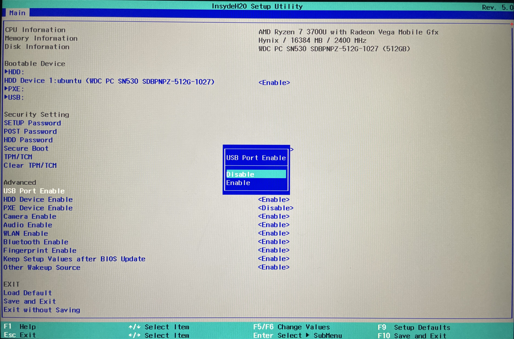
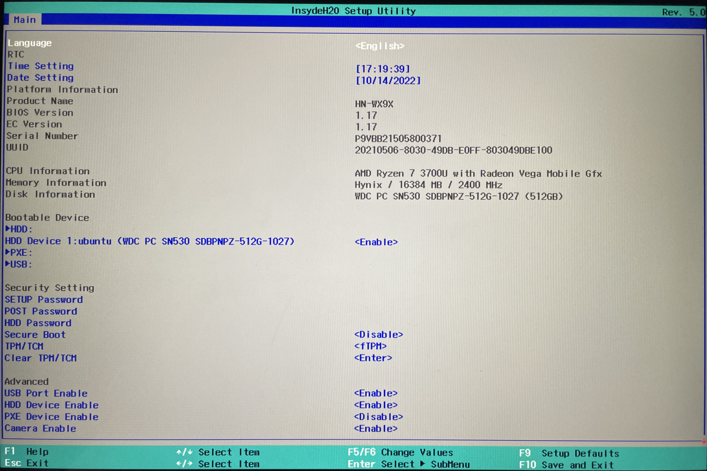
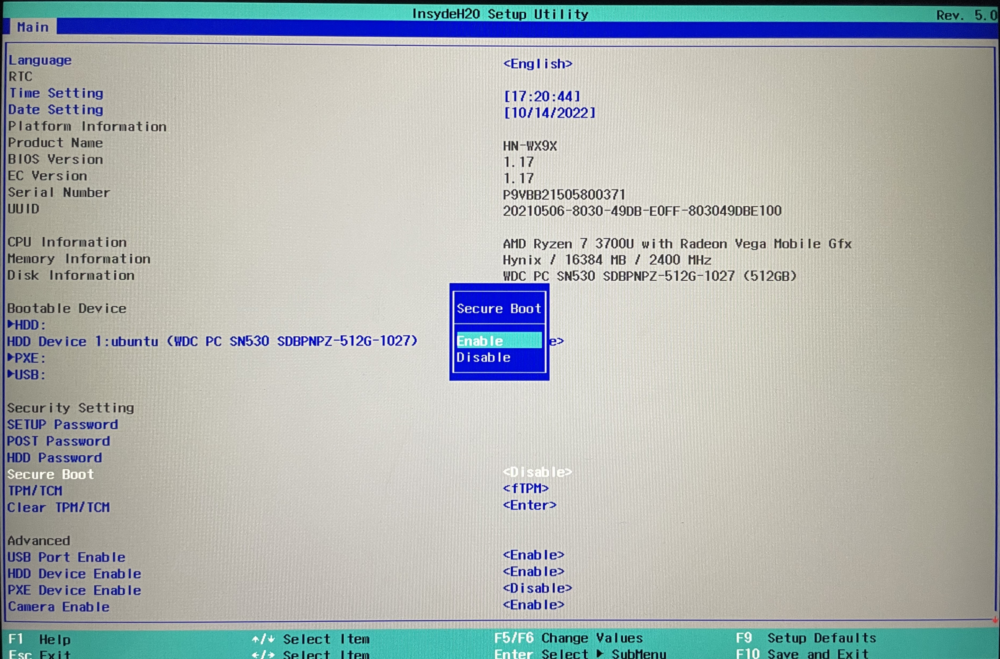
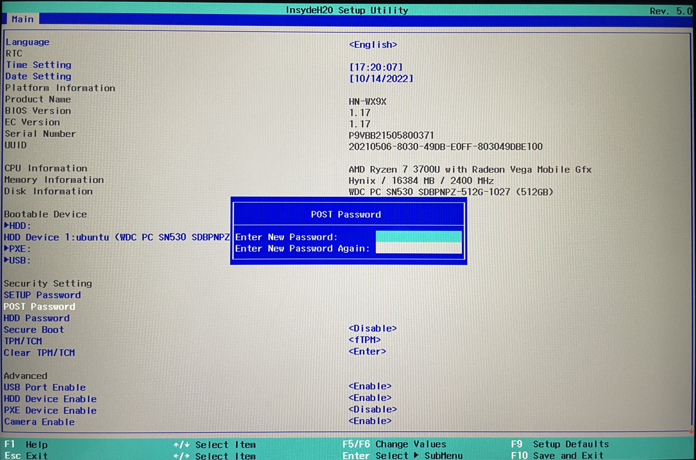
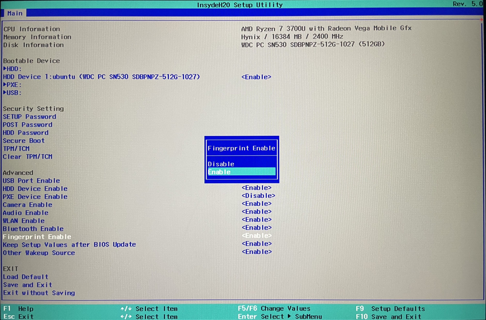
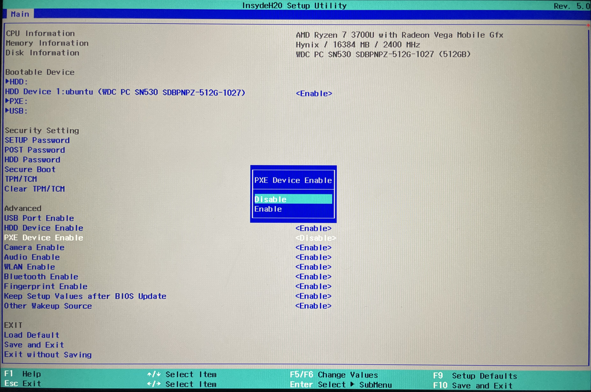
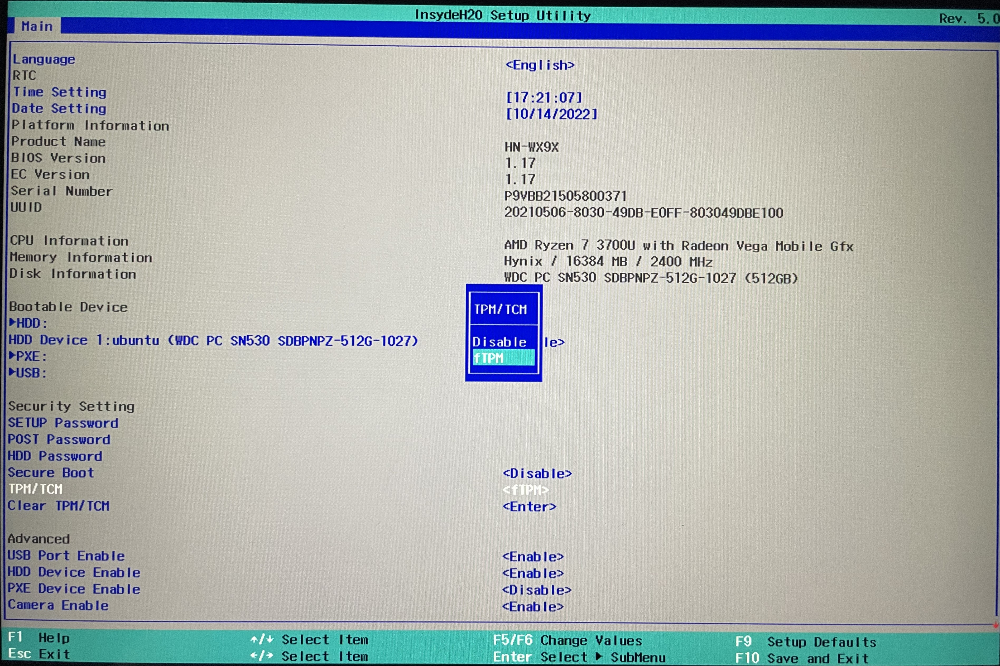
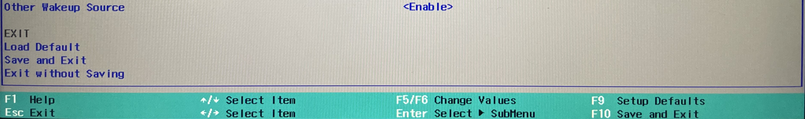

Al activar esta opción, se solicita una contraseña que se solicitará cada vez que se encienda el quipo.

Solicita una contraseña para poder modificar los diferentes parámetros de la BIOS.

Para evitar arranques externos, desde nuestra BIOS, podemos deshabilitar las entradas USB y así no se podrá utilizar ningún medio externo para realizar esta acción.

Define el orden en el que se buscarán los dispositivos para la ejecución, se ordena por prioridad de mayor a menor, lo que quiere decir que si ponemos en primer lugar un USB, buscará este para iniciar el sistema desde el mismo, en caso de no encontrarlo pasará al siguiente dispositivo en la lista de prioridad y así sucesivamente hasta que detecte un dispositivo desde el que se pueda ejecutar el arranque.

Impide que se ejecute software que no disponga de un certificado aprobado durante el arranque del sistema. Algunas distribuciones de Linux se han adaptado con el tiempo para que se permita su ejecución cuando esta opción se encuentre activada.

Protege la seguridad del equipo solicitando la contraseña POST al usuario para entrar a la configuración de la BIOS (Esta contraseña no puede eliminarse).

Sirve para activar la verificación biométrica a través de la huella dactilar usando el sensor que incorpora el portátil.

Permite ejecutar el sistema operativo y arrancarlo por red.

Es una tecnología que almacena y cifra en un chip información del usuario como datos confidenciales, o claves de los usuarios del equipo.

Esta opción permite utilizar nuestro equipo como una "máquina tonta" y ejecutar un sistema operativo desde una máquina remota, deshabilitando esta opción evitamos que esto pueda producirse.
